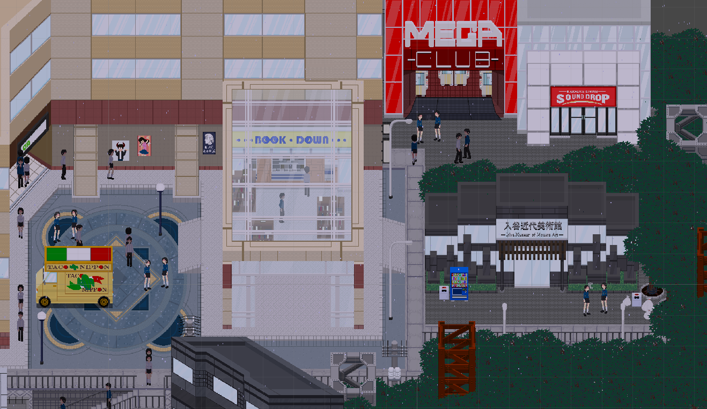
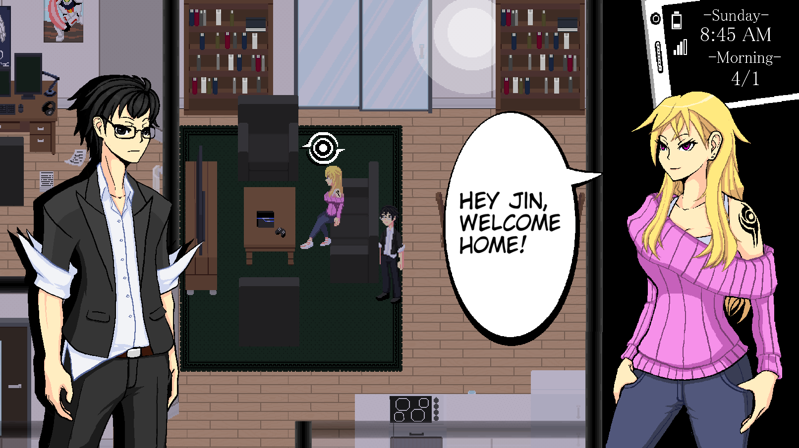
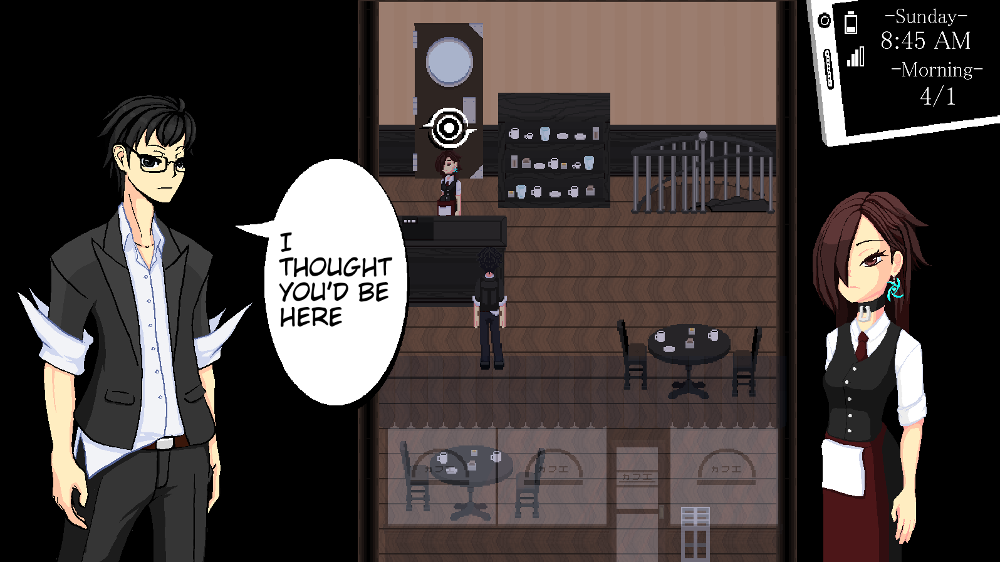
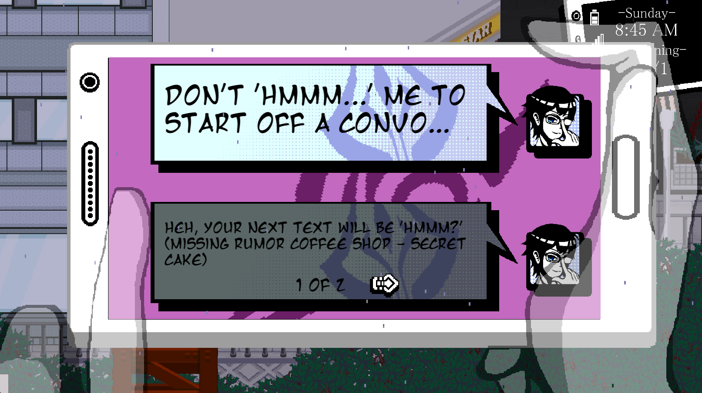

Rainfall Dev Blog #3: May 2018 - June 2018
From May until the end of June, our primary goal for “Rainfall ~ Do You Still Like This World?” was to increase the number of scenes related to the Tutorial and Mari’s Arc as well as flesh out some of our other systems. We also placed an emphasis on remaking our render pipeline so that the game could be pixel perfect and changing our Visual Novel portrait style to be more consistent with the rest of the assets in our game.
Pixel Perfection
Pixel perfection and the changes to our rendering pipeline were some of the largest scale changes on the backend during this period. Up until now, our camera and the sprites themselves did not attempt to conform to the sprite boundary, so when setting up our scenes sprites would frequently be placed on positions that would render them improperly.
This process was explained in further detail in our Pixel Perfection blog post.
City Rework

Reworks to the city continued as new map assets were being created. The eastern quadrant of the city saw the most changes, becoming much denser due to the inclusion of the new Museum Building. Book Down was also moved from the southern part of the map into the station plaza itself along with the Taco Truck as well. It's important to note that the city itself is still a work in progress as new assets are made or old assets are improved.
Visual Novel Portraits

Over the course of the year our asset production pipeline has greatly matured improving in not just the style used to render them but the tools as well. There are three key areas where we’ve improved here: the software, the hardware, and the drawing itself. In terms of software while we still utilize Paint.NET to produce the majority of the game’s assets, for the portraits we found that Paint.NET had become too limiting in what its brush engine offered and chose to upgrade to other software, namely Clip Studio Paint and Krita. Both of these programs offered not only a much more powerful and detailed brush engine more appropriate for the level of detail needed for the portraits, but other valuable tools for efficient production as well such as built in pose references and pre-set brush configurations.
A massive upgrade was made in our hardware as well. Originally the portraits were produced by using a combination of a standard mouse and a drawing tablet, which lacked display capabilities. Since then we’ve upgraded to a drawing tablet with a display which has made not only the production process much faster and more detailed, but the drafting and refining process as well, providing a more one-to-one translations of the artist’s skill from traditional media to digital.
And lastly, and most key in our improvements, is the improvements in the ability of the artist themselves. Over time our artist has grasped a stronger concept of art fundamentals and good practices that have allowed them to not only produce portraits faster than before, but in a way which is much more aesthetically pleasing and fitting for our game.
Yumeko Arc

During scene production of Mari's Arc we were able to introduce a new member to the cast named Yumeko.
Yumeko is one of Mari's classmates and her best friend. Born into a wealthy family, Yumeko’s life has revolved around all the expectations placed on her, most of which comes from her parents. Though she excels in her studies Yumeko can be oblivious to common social cues, and as such, her diligence and empathy are easily exploited by the people around her despite her own good intentions. Currently she works as a waitress at the local coffee shop despite her parents’ desire for her to focus on her academics. Yumeko is also a fan of Jin’s light novels primarily due to Mari's influence.
We’ve fully implemented Yumeko’s Relationship Arc into the game now as a key part of our scene production goals..
Text Messages

A text messaging system has been implemented into the Phone Menu allowing for other characters to send you messages. The Active Choice system was carried over to here as well with the exception of timed active choices. As such, some texts may be limited to having a response within that day or time chunk. The player can also use the rumors they’ve found to provide different responses here as well.
What's Next?
The game is in a dire need of a proper node-based pathfinding system to allow for paths to be drawn in a scene that NPCs can follow. This will make choreographing each of the cutscenes much easier as well as allow for the Crowd inside the city to be pixel perfect as well.
We also want to continue the creation of additional scenes to fill in more of the Tutorial and Mari Arcs before we transition into doing Mari’s Dungeon. Our intention for this is to flesh out our current cast of characters and add in a few more before we finish Mari’s Arc.